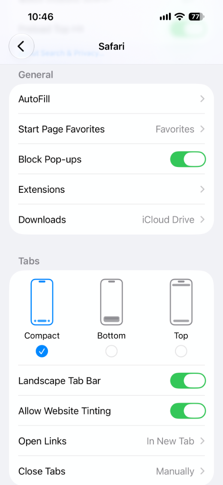

Für alle drei werden dieselben Wörter benutzt, deshalb lohnt es sich, sie zu trennen, bevor Sie an einer Einstellung drehen:
- Ein Fenster, das sich von selbst öffnet. Ein neuer Tab, meist mit einer Anzeige oder einem falschen Gewinnversprechen. Dafür ist Safaris eigener Pop-up-Blocker da.
- Ein Kasten, der über die Seite gelegt wird. Die Newsletter-Aufforderung, das Panel mit „10 % Rabatt“, die bildschirmfüllende Zustimmungswand. Er hat kein Fenster und keine eigene Adresse — er ist Teil der Seite.
- Ein Tippen, das die Seite verlässt. Der App Store, der sich von selbst öffnet, oder ein Tab, den Sie nicht öffnen wollten, weil eine unsichtbare Ebene über dem Artikel lag.
Die erste Art ist ein Safari-Problem. Die zweite ist der Ort, an dem die meiste Belästigung auf einem iPhone tatsächlich stattfindet, und Safaris Blocker sieht sie nie. Die dritte ist teils beides.
Schritt 1 — sicherstellen, dass Safaris eigener Blocker aktiv ist
Das dauert zehn Sekunden und erledigt die einfachsten Fälle:
- Öffnen Sie Einstellungen und scrollen Sie nach unten zu Apps.
- Tippen Sie auf Safari, um die Safari-Einstellungen zu öffnen.
- Suchen Sie den Abschnitt Allgemein und prüfen Sie, ob Pop-ups blockieren eingeschaltet ist.

Auf dem Mac finden Sie es unter Safari → Einstellungen (⌘,) → Websites → Pop-up-Fenster, dort auf Blockieren gestellt.
Diese Einstellung verweigert neue Fenster. Was sie nicht kann, ist ein Element auszublenden, das die Seite bereits zu zeichnen beschlossen hat — und sie kann auch nicht verhindern, dass ein Tippen einen Tab öffnet, denn das ist ein echter Tipp auf ein echtes Ziel.
Die Kurzfassung: Safaris Pop-ups blockieren fängt Fenster. Block Pop-ups in AdFence fängt die Kästen, die innerhalb der Seite gezeichnet werden — und von dort stammen fast alle.
Schritt 2 — verstehen, warum das Overlay überlebt hat
Ein Overlay ist kein Fenster. Es ist ein Stück der Seite, das über alles andere gelegt wird: Der Artikel liegt weiterhin darunter, ist weiterhin geladen, nur eben verdeckt. Safaris Pop-up-Blocker ist eine Regel über das Öffnen von Fenstern — hier gibt es für ihn nichts zu tun.
Es gibt zwei Wege, ein Overlay loszuwerden, und ein Content-Blocker nutzt beide. Er kann verhindern, dass das Skript, das das Overlay aufbaut, überhaupt geladen wird, und er kann das Element per CSS ausblenden, sobald es erscheint. Bei AdFence heißt dieser Schalter Block Pop-ups, und der Untertitel meint die beiden Hälften wörtlich: Er blockiert Pop-up-Fenster und schwebende Pop-ups.
Schritt 3 — einschalten
Die Erweiterung muss einmal in Safari aktiviert werden, so wie jeder Content-Blocker. Das ist ein anderer Schalter als der unten, und Sie erledigen es nur einmal pro Gerät — die Schritt-für-Schritt-Anleitung führt Sie durch.
- Öffnen Sie die App AdFence.
- Scrollen Sie im Tab General zu Other Settings.
- Schalten Sie Block Pop-ups ein.
- Kehren Sie zu Safari zurück und laden Sie die Seite neu.

Das Neuladen ist wichtig. Eine Seite, die bereits auf dem Bildschirm steht, behält, was sie geladen hat, bevor die Erweiterung lief — ein danach eingeschalteter Schalter bewirkt also nichts, bis die Seite erneut geladen wird. Auf dem iPhone ziehen Sie die Seite nach unten; auf dem Mac ⌘R.
Jeder Schalter in dieser Liste ist unabhängig. Block Pop-ups einzuschalten schaltet nicht die Werbeblockierung ein, und das Ausblenden von Cookie-Hinweisen verpflichtet Sie zu nichts Weiterem — genau dafür sind sie getrennt.
Schritt 4 — die Wand „Bitte deaktivieren Sie Ihren Werbeblocker“
Das ist ein Pop-up in die andere Richtung: Die Website hat einen Blocker bemerkt und ein Panel vor den Artikel gesetzt, bis Sie ihn deaktivieren. Es mit einer CSS-Regel zu blockieren funktioniert so lange, bis die Website das Element umbenennt — deshalb braucht es eine eigene Einstellung.
Bypass Anti-Adblock im selben Tab General unter Blocking List tut zwei Dinge: Es wirkt dem Erkennungsskript entgegen und blendet die Wand aus, die solche Seiten aufbauen. Schalten Sie es ein, wenn Ihnen immer wieder eine leere Seite mit der Meldung „Wir haben bemerkt, dass Sie einen Werbeblocker verwenden“ begegnet statt einer Anzeige.
Wenn eine einzelne Website weiterhin eines zeigt
Gehen Sie in dieser Reihenfolge vor — die ersten beiden kosten nichts:
- Laden Sie die Seite richtig neu. Die Hälfte aller Fälle von „Hat nicht funktioniert“ ist eine Seite, die geladen wurde, bevor der Schalter an war.
- Probieren Sie den Reader. Tippen Sie in der Adressleiste von Safari auf das Menü aA und wählen Sie Reader anzeigen. Auf einer Artikelseite entfernt das die meisten Overlays auf einen Schlag, ohne dass Sie an Einstellungen müssen. Es ist die beste Notlösung für eine Website, die Sie nur einmal besuchen.
- Heben Sie einen Filter für eine Website auf. Im Tab Custom von AdFence lässt Site Overrides einen einzelnen Filter nur für diese Adresse durch. Nutzen Sie es auch andersherum: Wenn eine Seite nach dem Blockieren von einer leeren Ebene bedeckt ist, wartet die Website auf einen Kasten, der nie erschienen ist.
- Pausieren Sie diese Website. Site Settings → Pause Blocking stellt AdFence für eine Adresse ab und lässt alles andere in Ruhe. Das Pop-up kommt dadurch zurück — betrachten Sie es als letztes Mittel, nicht als erstes.
Was niemand blockieren kann
Es lohnt sich, bei den Grenzen ehrlich zu sein, denn die Werbeindustrie bewegt sich mit ihrer ganzen Richtung genau dorthin:
- Safaris eigene Abfragen. Die Dialoge für Standort, Kamera, Mikrofon und Mitteilungen zeichnet iOS, nicht die Seite. Kein Content-Blocker rührt sie an. Lehnen Sie sie ab — sie sind meist nicht der Grund, warum Sie die Website geöffnet haben.
- Pop-ups in anderen Apps. Links, die aus Instagram, Facebook, Gmail oder Reddit geöffnet werden, laufen im Browser der jeweiligen App, und der unterstützt keine Safari-Erweiterungen. Öffnen Sie die Seite stattdessen in Safari.
- Ein Kasten, den die Skripte der Website von ihrer eigenen Domain aus zeichnen, wenn dieses Muster noch nicht in einer Filterliste steht. Filterlisten werden mit der App ausgeliefert und aktualisieren sich, wenn die App aktualisiert wird — die Lücke schließt also das nächste Update, oder eine eigene Regel schließt sie sofort.
Ein Content-Blocker betrachtet keine Seite und urteilt, welche Kästen störend sind. Er gleicht Adressen und Elementmuster, die er bereits kennt, mit einer Liste ab. Deshalb ist er schnell und privat — und deshalb ist er nie ganz vollständig.
Wie Sie erkennen, dass er wirklich läuft
Öffnen Sie AdFence und tippen Sie auf Plugins. Jede Erweiterung zeigt ein grünes Active, wenn Safari sie als aktiviert meldet, und Grau, wenn nicht. Refresh Status fragt Safari erneut. Ist eine Zeile grau, während der Schalter in Safari eingeschaltet aussieht, liest die App eine veraltete Antwort — aktualisieren Sie, bevor Sie etwas ändern.
Eine letzte Kontrolle: der Hauptschalter Blocking oben im Tab General. Solange er aus ist, lädt jede Erweiterung eine leere Regelliste — dann wird nirgends etwas blockiert, egal wie der Rest der App eingestellt ist.
Häufig gestellte Fragen
Blockiert das auch Pop-ups in Chrome oder Firefox auf dem iPhone?
Nein. Content-Blocker unter iOS sind Safari-Erweiterungen, und nur Safari führt sie aus. Chrome und Firefox auf dem iPhone zeichnen ihre eigenen Seiten und ignorieren die Erweiterungsliste von Safari vollständig.
Warum zeigt eine Website noch ein Pop-up, nachdem ich den Schalter eingeschaltet habe?
Zwei übliche Gründe: Die Seite war bereits geladen, bevor die Erweiterung startete, und braucht daher ein Neuladen; oder der Kasten stammt von der eigenen Domain der Website und steht noch nicht in einer Filterliste. Laden Sie zuerst neu und nutzen Sie dann Site Overrides oder eine eigene Regel für diese eine Website.
Bringt das Blockieren von Pop-ups eine Website durcheinander?
Gelegentlich. Manche Websites sperren das Scrollen, bis ihr Newsletter-Kasten geschlossen ist, und wenn der Kasten nie erscheint, kann sich die Seite festgefahren anfühlen. Nutzen Sie Pause Blocking für diese eine Website — die anderen behalten die Einstellung.
Funktioniert das auch auf dem Mac?
Ja — dieselbe App, derselbe Schalter. Aktivieren Sie die AdFence-Erweiterungen einmal in Safari → Einstellungen → Erweiterungen auf dem Mac und schalten Sie dann im Tab General der App Block Pop-ups ein.